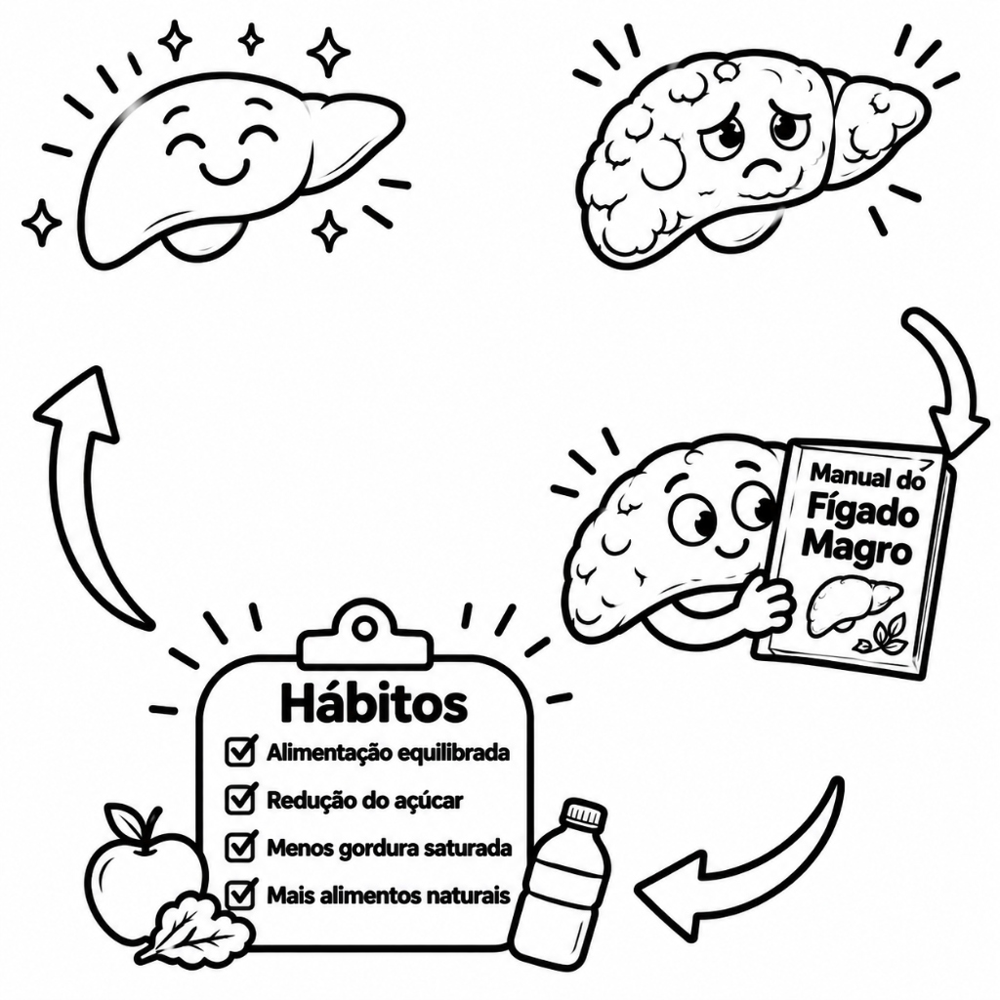
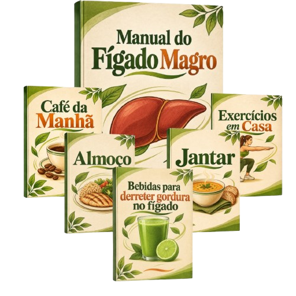
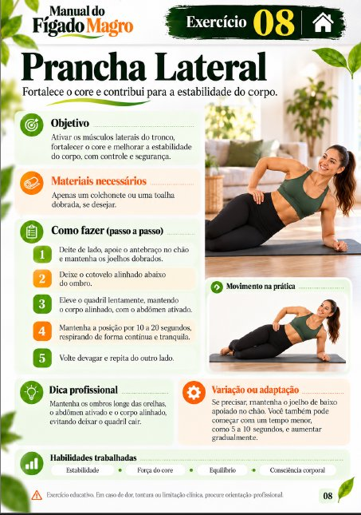
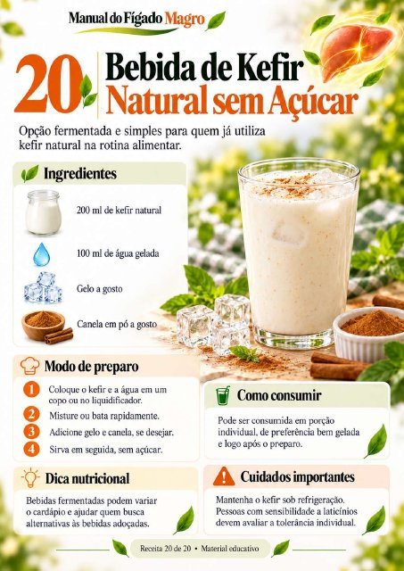
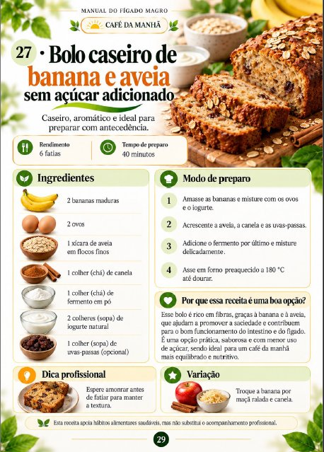
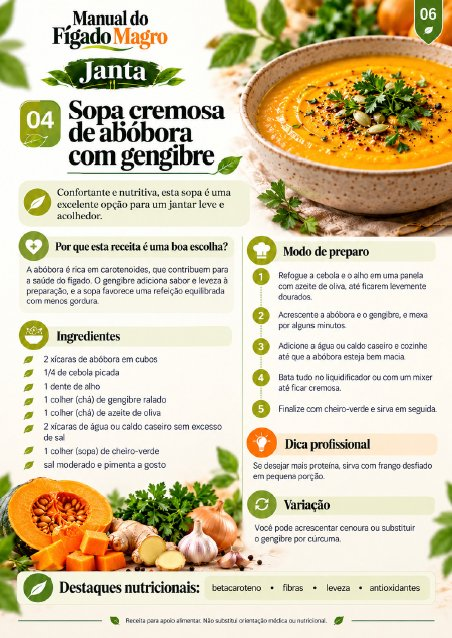

O que o Manual vai fazer
Vou te explicar de um jeito simples.

Hoje o seu fígado está sobrecarregado.
É açúcar, é gordura ruim, é comida de caixinha, dia após dia. Ele não dá conta, inflama e começa a acumular gordura.
E o pior é que ele não dói. Você só sente o inchaço, o peso e o cansaço.
O Manual começa justamente cortando essa sobrecarga. Sem dieta maluca e sem passar fome.
Você vai comer comida gostosa, diminuir o açúcar sem sofrer, trocar as gorduras que inflamam e colocar no seu dia alimentos naturais e bebidas que ajudam o fígado.
Aí o corpo responde. A barriga desincha, a digestão fica leve e o seu fígado volta a trabalhar com energia, regenerando de dentro pra fora.

O que vem dentro
São cinco guias, um pra cada momento do seu dia.
Você abre, segue e pronto.


1. Café da manhã
Receitas rápidas pra começar o dia queimando gordura, sem aquele pico de açúcar no sangue.

2. Almoço
Pratos que fazem a digestão andar e ajudam a segurar a gordura da barriga.

3. Janta leve
Pra você dormir sem refluxo e deixar o fígado se recuperar durante a noite.
4. Exercícios
De 10 a 15 minutinhos, sem impacto, ali na sala mesmo.

5. Bebidas detox
Chás e shots que ajudam a eliminar o que ficou acumulado.
Depoimentos
Olha o que quem já começou está falando:
“Eu acordava todo dia com a boca amarga, o estômago pesado e sem vontade de nada. Comecei pelas receitas do café da manhã e em menos de duas semanas a energia voltou e o amargo sumiu. No último ultrassom o médico falou: seu fígado desinflamou.”
 Aluno Verificado ✓
Aluno Verificado ✓
“Eu não dormia direito por causa do refluxo, aquela queimação depois da janta. As receitas da janta leve resolveram. Comida gostosa, leve, e hoje eu durmo a noite inteira sem azia.”
 Aluna Verificada ✓
Aluna Verificada ✓
“Larguei o suco de caixinha e o refrigerante e passei pros chás do guia. Em 10 dias a retenção foi embora e o meu TGP, que estava bem alto, voltou ao normal no exame.”
 Aluna Verificada ✓
Aluna Verificada ✓
“Entre filho e trabalho, meu almoço era qualquer coisa. Resultado: esteatose grau 2. O guia de almoço salvou minha rotina. É rápido, é gostoso e não pesa. Desinchei muito e perdi 4 quilos sem sofrer.”
Veja o Material por Dentro
Essas são páginas de verdade do que chega no seu celular.
Receita com foto, passo a passo fácil de seguir e os treininhos pra fazer na sala.








3 Presentes pra Você
Se você garantir o Manual hoje, ainda leva três guias de presente.
Sem pagar nada a mais por isso.

Bônus 1. Cardápio de 30 dias

Bônus 2. Sobremesas sem açúcar

Bônus 3. Alimentos a evitar
Prints do WhatsApp
Essas mensagens chegaram no nosso WhatsApp, sem a gente pedir:

“Minha gordura no fígado caiu de grau 2 pra leve em só 21 dias de manual!”

“TGO foi de 84 pra 26 e TGP de 92 pra 29. Tudo normal!”

“Com 3 semanas minha digestão mudou completamente e desinchei 5 quilos!”
Como você recebe
É tudo digital e chega rapidinho.
Acesso no e-mail e WhatsApp
Pagou, aprovou, e o link já cai no seu e-mail e no seu WhatsApp.
Abre em qualquer tela
Abre em qualquer celular, Android ou iPhone, no tablet ou no computador. E se você gosta de papel, pode imprimir.
Comida de verdade
Não tem remédio e não tem pílula milagrosa. É comida de verdade, daquela que você acha em qualquer feira.
Lê e aplica no mesmo dia
Dá pra ler no intervalo do almoço, no ônibus ou antes de dormir. E o que você lê de manhã, já consegue aplicar no mesmo dia.
Como você recebe
É tudo digital e chega rapidinho.

Pagou, aprovou, e o link já cai no seu e-mail e no seu WhatsApp.
Abre em qualquer celular, Android ou iPhone, no tablet ou no computador. E se você gosta de papel, pode imprimir.
Não tem remédio e não tem pílula milagrosa. É comida de verdade, daquela que você acha em qualquer feira.
Dá pra ler no intervalo do almoço, no ônibus ou antes de dormir. E o que você lê de manhã, já consegue aplicar no mesmo dia.
Quero derreter a gordura do meu fígado
3 Presentes pra Você
Se você garantir o Manual hoje, ainda leva três guias de presente.
Sem pagar nada a mais por isso.
Bônus #1 • Exclusivo
Bônus 1. Cardápio de 30 dias
Do dia 1 ao dia 30, já está tudo montado: 90 receitas de café, almoço, janta e a bebida do dia. Você não precisa mais pensar no que vai comer. Só segue a ordem.
Bônus #2 • Exclusivo
Bônus 2. Sobremesas sem açúcar
Porque ninguém vive sem um docinho. Receitas feitas pra quem tem gordura no fígado matar a vontade sem subir a glicose e sem inflamar tudo de novo.
Bônus #3 • Exclusivo
Bônus 3. Alimentos a evitar
Tem comida que parece inofensiva e está sabotando o seu fígado todo dia, em silêncio. Aqui você descobre quais são e para de travar a queima da gordura da barriga.
Oferta
Agora deixa eu te mostrar tudo o que você leva:

Menos do que uma consulta. Menos do que uma pizza no fim de semana.
Garantia de 7 dias
O risco aqui é todo meu.
Você entra, testa o Manual por 7 dias inteiros. Se não sentir a digestão mais leve, a barriga menos inchada e mais disposição no dia a dia, é só mandar um e-mail. Eu devolvo 100% do seu dinheiro, sem pergunta e sem enrolação.
Cabe na sua rotina
Você não precisa mudar a sua vida inteira de uma vez.

Escolhe por onde quer começar:
Umas trocas simples e gostosas que já desinflamam logo cedo, sem passar fome.
Um chá rápido pra cortar a azia, o peso e aquele cansaço do meio do dia.
Receitas fáceis pra dormir sem o estômago pesado e deixar o corpo queimar gordura durante a noite.
Olha o que ajudou na prática:
“Eu vivia com a barriga inchada, azia todo dia e um desânimo que não ia embora. Fiz as trocas do manual e em 2 semanas perdi 5 cm de barriga. Meu médico até elogiou o ultrassom.”
“Comprei meio desconfiada, confesso. Mas é tudo bem explicadinho e dá pra fazer sem complicação. Não precisei de remédio caro nem de dieta maluca.”
E nos dias corridos?
- • Faz só o café ou só a bebida do dia.
- • Parou uma semana? Volta de onde parou. Não precisa começar do zero.
O seu fígado trabalha por você 24 horas por dia, sem reclamar.
Tá na hora de você cuidar dele de volta.
Quero meu manual
R$ 47,90
Manual em PDF + 5 guias práticos + 3 bônus · 7 dias de garantia
Perguntas Frequentes
O Manual do Fígado Magro, que é o guia principal, mais os 5 guias práticos: café da manhã, almoço, janta leve, exercícios em casa e bebidas detox. E ainda os 3 bônus: o cardápio de 30 dias, as sobremesas sem açúcar e a lista de alimentos a evitar.
Não. Nada importado, nada difícil de achar. É coisa que tem na feira e no mercadinho do bairro, pensada pro bolso de todo mundo.
Nenhum. Nada de peso, esteira ou academia. É o chão da sala e de 10 a 15 minutos, com movimentos que respeitam as suas articulações.
Serve. O método vai direto na causa do acúmulo de gordura no fígado. No grau 1 e no 2, o resultado costuma vir rápido. No grau 3, ele ajuda a frear a inflamação e a regenerar o fígado.
A maioria das pessoas já sente a barriga menos inchada, menos azia e menos cansaço na primeira semana. Entre 21 e 30 dias, a diferença costuma aparecer nos exames de TGO e TGP e na medida da cintura.
Na hora. No PIX ou no cartão, a aprovação sai em menos de um minuto e você recebe o link por e-mail e por WhatsApp pra baixar tudo em PDF.
Você tem 7 dias de garantia. Se achar que não é pra você, manda um e-mail e a gente devolve todo o seu dinheiro, sem fazer pergunta nenhuma.